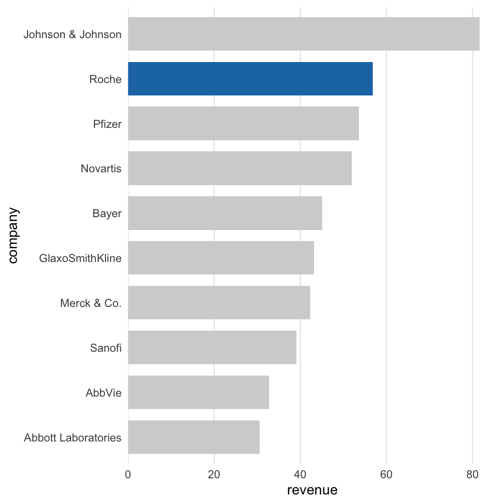
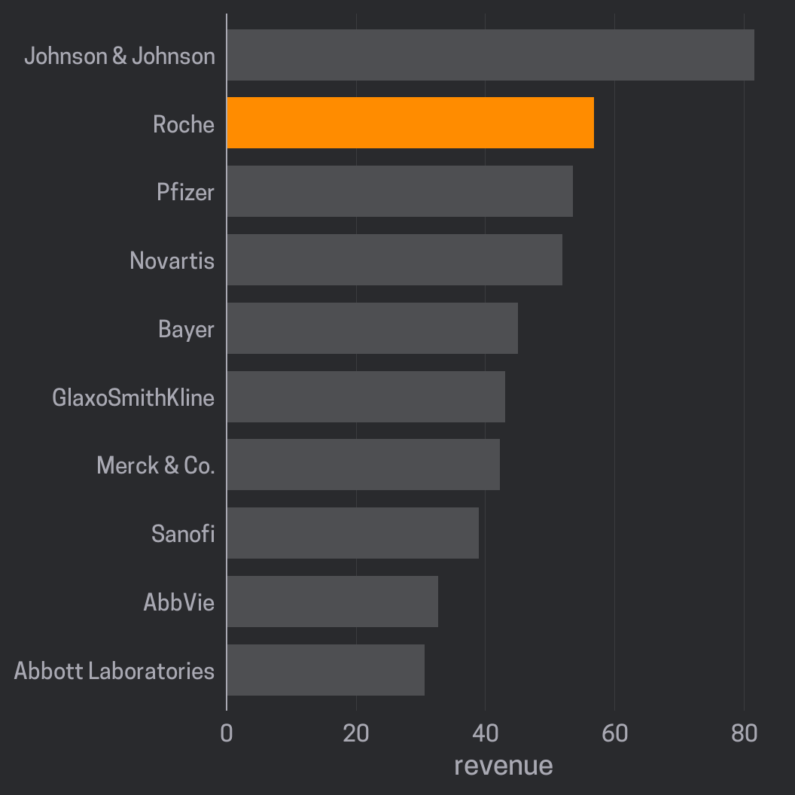
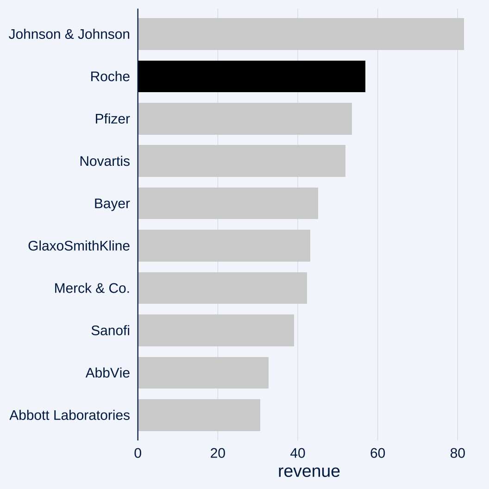
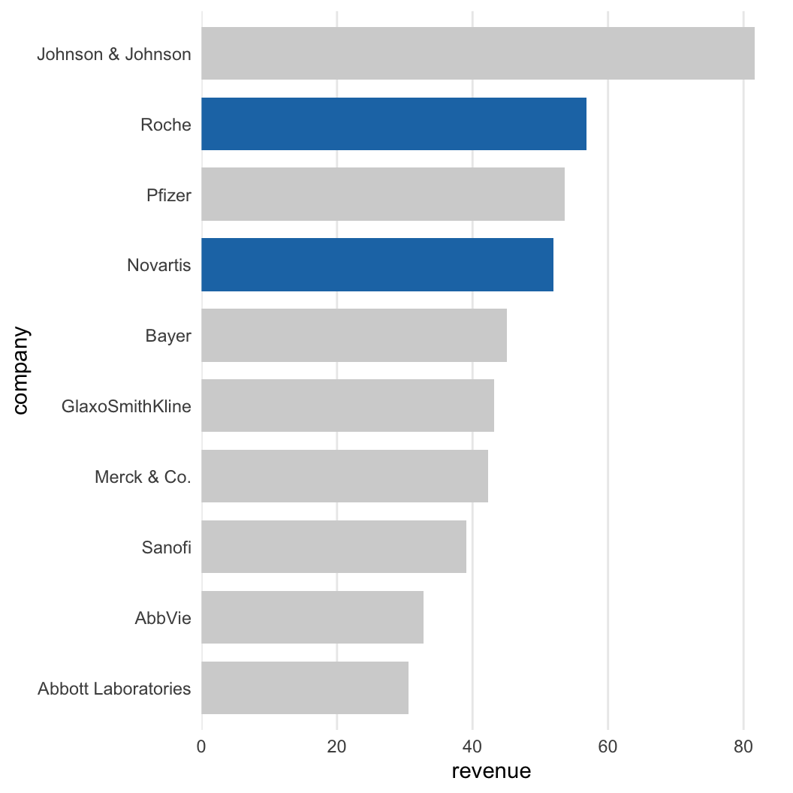
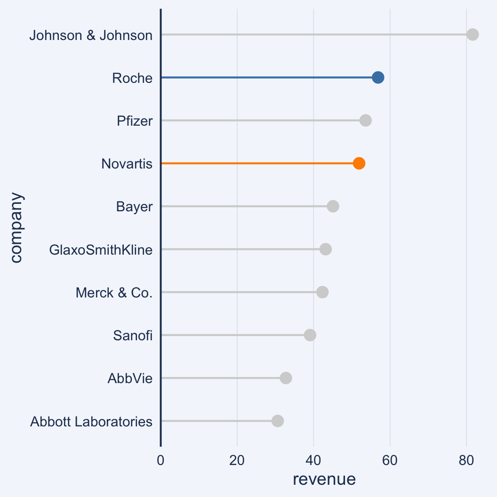

Introduction
The ggcharts package currently offers two functions with a highlight parameter: bar_chart() and lollipop_chart(). Unless otherwise noted the usage is the same for both functions.
Basic Usage
In its most simple form the highlight feature can be used to highlight a single bar or lollipop.
bar_chart( revenue2018, company, revenue, limit = 10, highlight = "Roche" )

Changing the Highlight Color
Changing the highlight color is simple: just provide a color to the bar_color parameter.
bar_chart( revenue2018, company, revenue, limit = 10, highlight = "Roche", bar_color = "darkorange" )

To change the highlight color in lollipop_chart() pass a color to line_color. Note that having a different color for the lollipop head and stick is not possible when passing a value to highlight. The point_color will simply be ignored.
lollipop_chart( revenue2018, company, revenue, limit = 10, highlight = "Roche", line_color = "darkgreen" )

Highlighting Multiple Data Points
To highlight more than one bar pass a vector to highlight. Note the message that gets printed.

To highlight multiple bars in different colors pass a vector of colors to bar_color or line_color for bar_chart() and lollipop_chart(), respectively.
lollipop_chart( revenue2018, company, revenue, limit = 10, highlight = c("Roche", "Novartis"), line_color = c("steelblue", "darkorange") )
